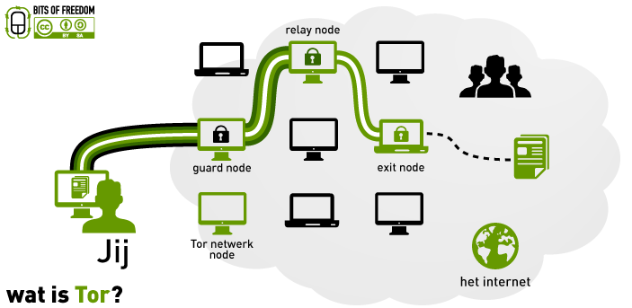

Scroll down for info about tor!

Tor is an open network for anonymous communication based on a technique named onion browsing. Onion routing is a technology developed in 1995 by United States Naval Research Laboratory. The network is one of the systems Edward Snowden used to publish classified documents. Tor network is meant to prevent others from tracking down information from data.
The network is based on onion-servers; computers that are the stations between origin and destination. the name 'onion routing' is not a random name. onion stands for the way data is suggested on the Tor network. the principe is that messages by using a random path trough different onion-servers are travelling to their destination, where every server decodes 1 layer of the encoded routing-information. this data is then gonna be send to the next server until the decoded data is arrived by the receiver. because of the decoded information between every server it is never possible to track the origin and the destination
as by many encrypting methods also Tor knows their weak places. on the website of Tor is a warning that only Using tor doesn't give enought protection for some purposes en that the user also have to watch out for some things, for example dismissing of browser plug-ins and cookies.
men could also set up a Tor-exitnode (a server where the traffic leaves the Tor network and is led to the 'normal' internet). in that case men could also track some information what isn't possible when the computer is fully on the Tor network. this was established in august 2007 by the Swedish securityconsult Dan Egerstad, who discovered hundrets of usernames and passwords of diplomatic services of embassies. after publishing 100 of these logins Dan Egerstad was arrested by the Swedish police on 16 november 2007
Tor is also used by the Military of the United States. This in order to prevent hackers from stealing/leaking private data.
With tor you can visit websites that normal browsers can't. when u search for these links on the normal internet the browser gives an error: 'this site can't be reached'. So with tor you can open these links, for privacy it's amazing. But because of the high security level crimes also uses the onion-servers to publish their websites and services. these links belongs to Darkweb. The bad site of the internet. by accessing the darkweb. you can hire hackers to let them work for you. These hackers can do website attacks, hack other computers and steal information for you. But on the Darkweb you also can hire a killer. browsing to Darkweb itself is not illegal. it's illegal at the moment you buy something there.
}